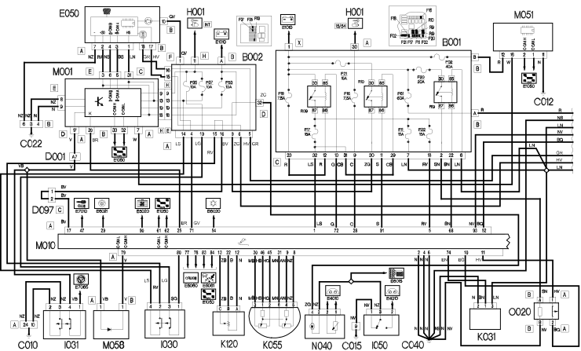
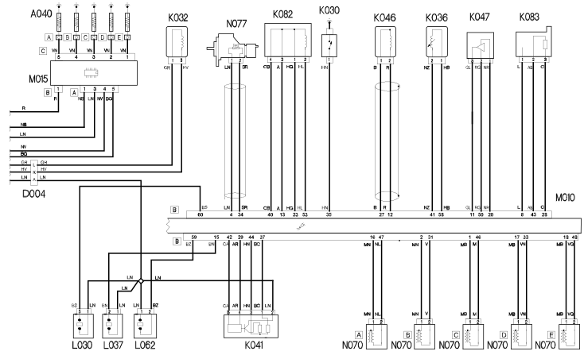

E5050 DIESEL ENGINE ELECTRONIC MANAGEMENT WIRING DIAGRAM
- Path
- Electrical equipment > ELECTRICAL FUNCTIONS > E50 ENGINE CONTROL AND MANAGEMENT SYSTEMS > E5050 DIESEL ENGINES ELECTRONIC MANAGEMENT > E5050 DIESEL ENGINE ELECTRONIC MANAGEMENT WIRING DIAGRAM
- Kind
- topic
- Applies to
- engines: 2.4 JTD 20V; all production periods
- Interactive page
- https://sloeber94.github.io/elrnDB-lThss/en/#/841007691
Applies to: engines: 2.4 JTD 20V; all production periods
Wiring Diagram


Components
Component code | Name | Assembly reference |
|---|---|---|
Heater plugs | 5520C | |
Engine compartment junction unit | 5505A | |
Junction unit under dashboard | - | |
Left front earth | - | |
- | ||
Driver's dashboard earth | - | |
Centre dashboard earth | - | |
- | ||
- | ||
D004 | Giunzione anteriore / motore | - |
Short circuit coupling | - | |
Instrument panel | - | |
Ignition switch | - | |
I030 | Interruttore pedale freno | 5520G |
5520G | ||
Inertia switch | - | |
- | ||
Water in diesel filter sensor | - | |
- | ||
- | ||
- | ||
I.E. engine temperature sensor | - | |
- | ||
- | ||
1068A | ||
- | ||
- | ||
LINEAR SENSOR FOR FANS | 5040B | |
EGR solenoid valve | 1080C | |
- | ||
Throttle body solenoid valve | - | |
Body computer | - | |
Engine management control unit | 1056B | |
Heater plugs control unit | - | |
Braking system control unit (NFR) | - | |
Passive entry diode | - | |
Fuel pump and level gauge | - | |
Injector | 1056B | |
Fuel pressure regulator | 1060G | |
Diesel heating resistance | - |
Topics linked from this page (38)
- A040 Heater plugs
- B001 Engine compartment junction unit
- B002 Junction unit under dashboard
- C010 Left front earth
- C012 ABS front earth
- C015 Driver's dashboard earth
- C022 Centre dashboard earth
- C040 Earth on engine
- D001 Front/dashboard coupling
- D097 Short circuit coupling
- E050 Instrument panel
- H001 Ignition switch
- I031 Switch on clutch pedal
- I050 Inertia switch
- K030 Insufficient engine oil pressure sensor
- K031 Water in diesel filter sensor
- K032 Engine oil level sensor
- K036 Engine coolant temperature sensor/sender unit
- K041 Air flow meter
- K045 I.E. engine temperature sensor
- K046 Rpm sensor
- K047 Timing sensor
- K055 Accelerator pedal potentiometer
- K082 Supercharging sensor
- K083 Fuel pressure sensor
- K120 Linear sensor (for climate control)
- L030 EGR solenoid valve
- L037 Waste gate solenoid valve
- L062 Throttle body solenoid valve
- M001 Body computer
- M010 Engine management control unit
- M015 Heater plugs control unit
- M051 Braking system control unit (NFR)
- M058 Passive entry diode
- N040 Fuel pump and level gauge
- N070 Injector
- N077 Fuel pressure regulator
- O020 Diesel heating resistance